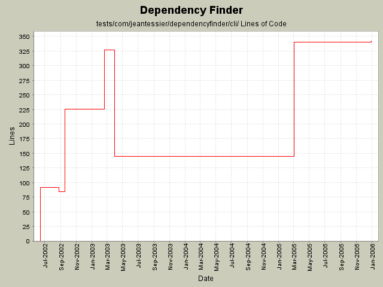

Summary Period: 2002-06-12 to 2005-12-31
[root]/tests/com/jeantessier/dependencyfinder/cli

Total Lines Of Code:
342 (2006-01-04 08:56)
| Author | Changes | Lines of Code | Lines per Change |
|---|---|---|---|
| jeantessier | 28 (100.0%) | 831 (100.0%) | 29.6 |
Use new JAXP 1.3 constructs
3 lines of code changed in:
Merge redesign for published API JarJarDiff
6 lines of code changed in:
Use only spaces for indentation
233 lines of code changed in:
New ClassFinder tool
195 lines of code changed in:
Update copyright notice to 2005
2 lines of code changed in:
Rename setters that were named getXXX() by mistake
1 lines of code changed in:
Phase X: naming changes
All test classes and test data
3 lines of code changed in:
Phase V of naming change:
com.jeantessier.dependencyfinder complete
com.jeantessier.dependencyfinder.ant complete
com.jeantessier.dependencyfinder.cli complete
com.jeantessier.dependencyfinder.gui complete
com.jeantessier.dependencyfinder.diff complete
com.jeantessier.dependency.metrics complete
3 lines of code changed in:
Phase I of naming change
5 lines of code changed in:
Change copyright to 2004
2 lines of code changed in:
Make VerboseListener classes extend the new VerboseListenerBase class
1 lines of code changed in:
Fix typo in license
1 lines of code changed in:
Moved ListDiffPrinter from com.jeantessier.dependencyfinder.cli to com.jeantessier.diff
0 lines of code changed in:
Got rid of -trace.
Rewrote -verbose.
101 lines of code changed in:
Updated copyright notice
2 lines of code changed in:
Fixed bug #609806.
Changed listing format of documented elements to distinguish packages from classes from features.
181 lines of code changed in:
Removed unnecessary constructor (upgrade JUnit 3.7 -> 3.8)
0 lines of code changed in:
Compress differences that are extensions of others
92 lines of code changed in:
Generated by StatCVS 0.2.2